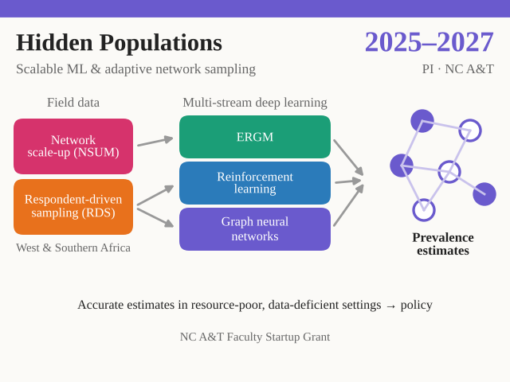

Scalable Machine Learning and Adaptive Network Sampling Analysis for Hidden and Hard-to-Reach Populations
- Target population
- Hidden and hard-to-reach populations, including trafficking survivors and at-risk communities in West and Southern Africa
- PI
- Hui Yi
- Co-PIs
- —
- Subaward
- None
- Funder
- North Carolina A&T State University, Faculty Startup Grant
A multi-stream deep learning approach to social network analysis integrating Exponential Random Graph Models, Reinforcement Learning, and Graph Neural Networks. Using network scale-up and respondent-driven sampling data collected in West and Southern Africa, the project develops robust methods for accurate prevalence estimates in resource-poor and data-deficient environments to guide policy and decision-making.